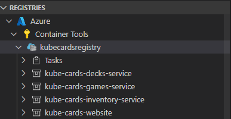
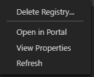
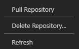
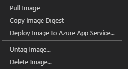
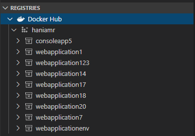
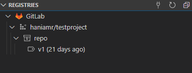

Using container registries
A container registry is a storage and content delivery system, holding named Docker images, available in different tagged versions.
Users can connect to Docker registries from the following sources:
- Azure Container Registry
- Docker Hub
- GitLab container registry
- Any generic private registry that supports the Docker V2 api
Azure Container Registry
This option requires the Azure Account extension to be able to connect to your Azure account and display all of the different subscriptions and registries. Once authenticated, the node Azure will display the subscriptions along with registries each have:

For each registry, users have different actions that can be performed using the context menu:

- Delete registry: deletes the registry permanently
- Open in portal: opens the browser and navigates to the registry in Azure Portal
- View properties: opens the registry properties in a json format
- Refresh: refreshes the registry to reflect changes
For each repository in a given registry, here are the actions that can be performed:

- Pull repository: copies all of the images in a given repository locally
- Delete repository: deletes the repository permanently
- Refresh: refreshes the repository to reflect changes
For each tagged image in a repository, here are the actions that can be performed:

- Pull image: copies the latest version of the image locally
- Copy image digest: copies the image digest, which is a SHA256 hash identifier that Docker uses, to the clipboard. See Docker Docs for more info on image digests
- Deploy image to Azure App Service: deploys the image to Azure App Service, see Deploy images to Azure App Service page
- Untag image: untags the image
- Delete image: deletes the image permanently
Docker Hub
This connects to Docker Hub and lists all of the repositories and images under the given account. Once you select this option, you will be required to type in your Docker Hub credentials.

For each repository in the Docker Hub registry, here are the actions that can be performed:
- Pull repository: copies all of the images in a given repository locally
- Open in browser: opens the browser and navigates to the given repository on Docker Hub
- Refresh: refreshes the repository to reflect changes
For each tagged image in a repository, here are the actions that can be performed:
- Pull image: copies the latest version of the image locally
- Open in browser: opens the browser and navigates to the given image on Docker Hub
GitLab
This connects to Docker registries in your GitLab account. Once you select this option, you will be required to type in your GitLab account credentials.

For each repository in the GitLab registry, here are the actions that can be performed:
- Pull repository: copies all of the images in a given repository locally
- Refresh: refreshes the repository to reflect changes
For each tagged image in a repository, here are the actions that can be performed:
- Pull image: copies the latest version of the image locally